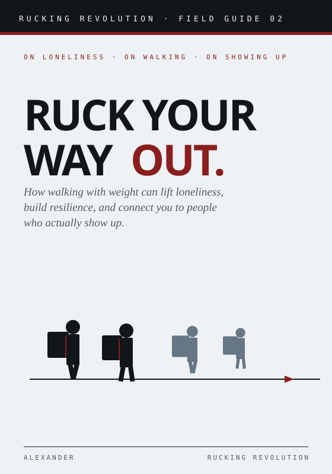
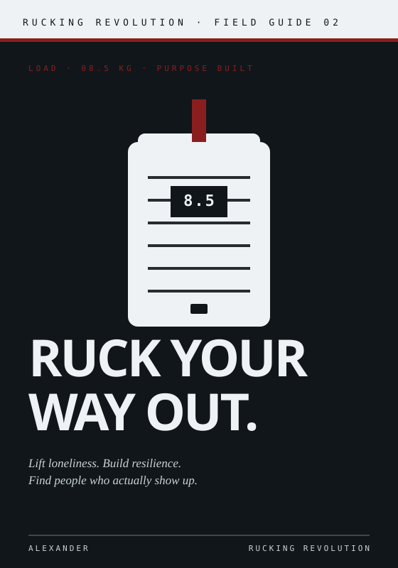
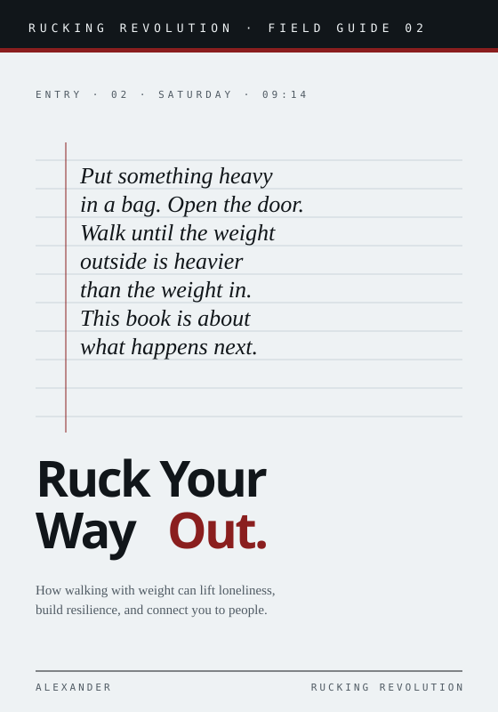
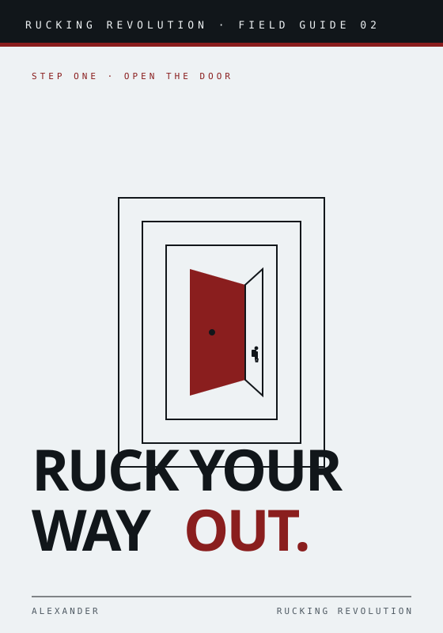
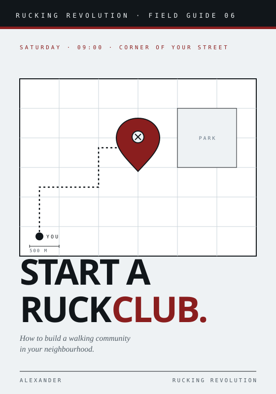
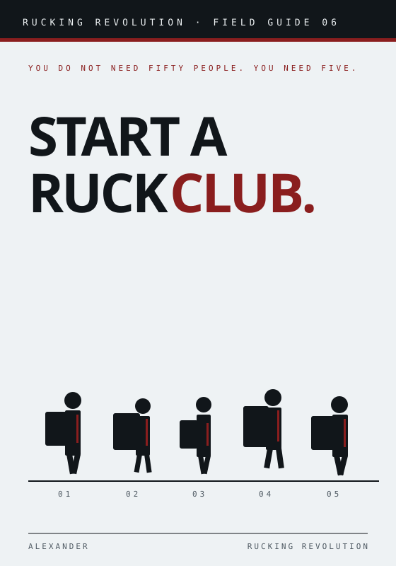
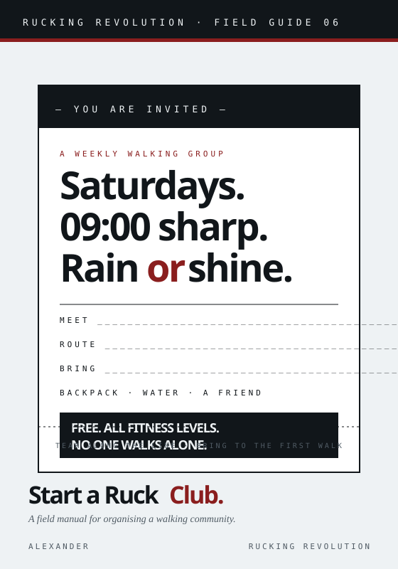
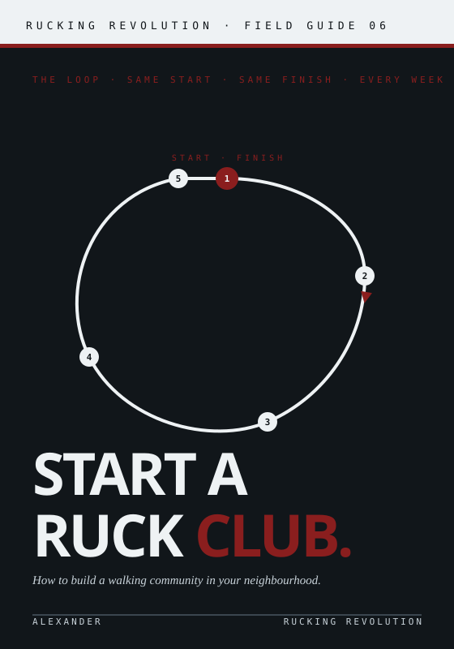

Side by side
Figures walking together. Renders the book's central social claim literally.
On loneliness, walking, and showing up. Four arguments for the same book, all inside the brand system.

Figures walking together. Renders the book's central social claim literally.

Full reversed. A single pack centered, red strap lifting. Bold, bookstore-loud.

Quiet. Cover mimics a journal entry — a stanza the reader finds before the book.

Most metaphorical. Red door open to light, tiny rucker stepping through.
Operational, actionable, neighbourly. Four visual answers to a how-to book.

Map with route + pin. Club as a location you can literally point to.

Five people, different packs, same ground line. The roster that starts a club.

Designed like a community-board invite. The book is the first flyer.

Reversed charcoal. A closed-loop route with five numbered stops.